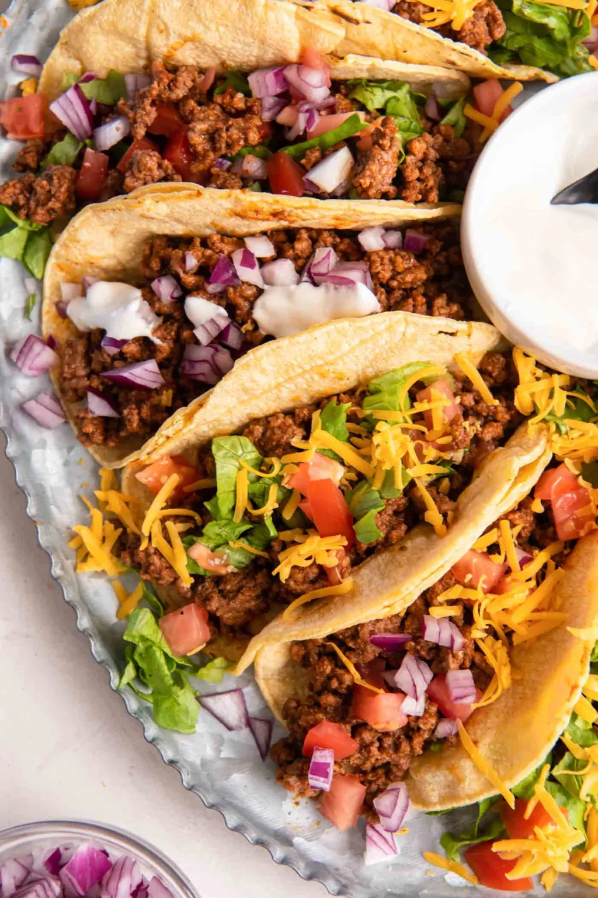

Tacos

Webiste
Weeknight Staple
Tacos: a weeknight dinner staple! This flavorful taco recipe is made with
seasoned ground beef taco meat and your favorite taco toppings, wrapped in warm tortillas.
- 1 pound ground beef, or ground turkey
- 2 teaspoons chili powder, or to taste; use less if you are sensitive to spice or your chili powder is very spicy
- 1 teaspoon ground cumin
- ½ teaspoon garlic powder
- ½ teaspoon dried oregano
- ¼ teaspoon onion powder
- ¼ teaspoon salt
- ⅛ teaspoon black pepper
- ½ cup tomato sauce
- ½ cup water
- 8 taco-size corn or flour tortillas
- Toppings, as desired: shredded cheese, shredded lettuce, chopped tomatoes, sour cream, avocado, guacamole, cilantro, chopped red onion, etc.
- Heat a large skillet over medium-high heat. Add the beef to the skillet and cook,
crumbling with a spoon or spatula, until browned. Drain any excess grease from the skillet.
(If you used 90% or 93% lean ground beef there may not be any extra grease to drain.)
- Reduce the heat to medium and add the chili powder, cumin, garlic powder, dried oregano,
onion powder, salt, pepper, tomato sauce and water to the skillet.
Stir to combine and cook, stirring often, for 5 minutes, until taco meat is fully cooked and has
reached your desired texture.
- Serve the taco meat in warmed tortillas, with toppings as desired.